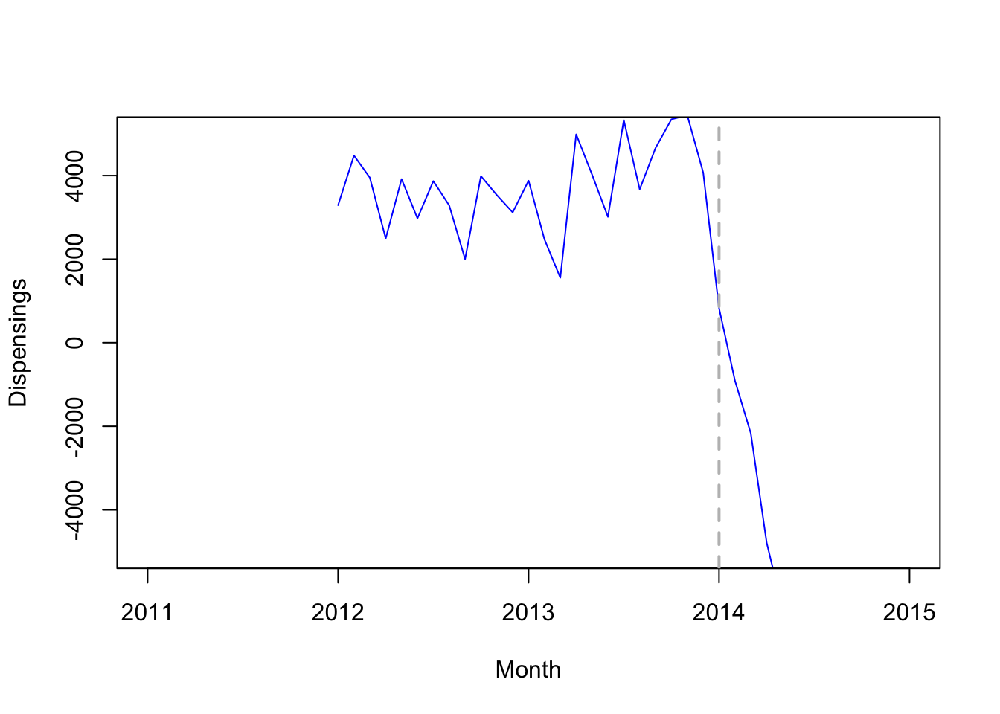
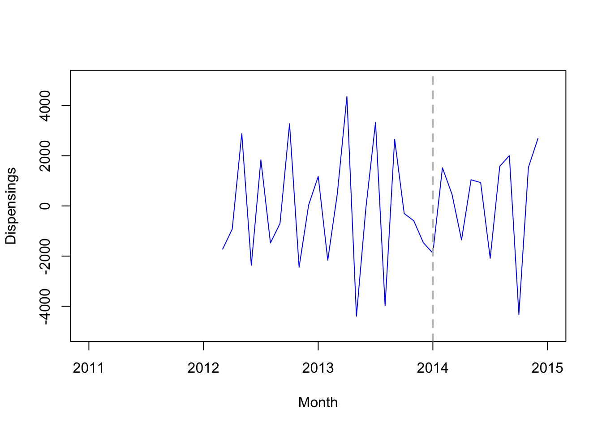

Chapter 5 PSM Matching Strategy
library(Matching)
library(MatchIt)
library(optmatch)
library(weights)
library(cem)
library(tcltk2)5.1 Data
data(lalonde)
dim(lalonde)## [1] 614 9names(lalonde)## [1] "treat" "age" "educ" "race" "married" "nodegree" "re74"
## [8] "re75" "re78"5.2 PSM Steps
5.2.1 Selection of covariates in X
fm1 = treat ~ age + educ + black + hispan + married + I(re74/1000) + I(re75/1000)
fm2 = treat ~ age + I(age^2) + I(age^3) + educ + black + hispan + married + I(re74/1000) + I(re75/1000)
fm3 = treat ~ age + I(age^2) + I(age^3) + educ + I(educ^2) + black + hispan + married + I(re74/1000) + I(re75/1000)5.2.2 Calculation of propensity scores (p-scores)
pscore <- glm(fm1, data = lalonde, family = 'binomial')
head(pscore$fitted.values)## NSW1 NSW2 NSW3 NSW4 NSW5 NSW6
## 0.5595934 0.2074437 0.7424791 0.7218247 0.6931278 0.6801861hist(pscore$fitted.values[lalonde$treat==0],xlim=c(0,1))
hist(pscore$fitted.values[lalonde$treat==1],xlim=c(0,1))
lalonde$pscore = pscore$fitted.valuestry other formulas?
5.2.3 Matching based on p-sores
all in one function matchit()
set.seed(42)
m.out <- matchit(data = lalonde,
formula = fm1,
distance = "logit",
method = "nearest",
replace = TRUE,
caliper = 0.2,
discard = 'both'
)- m.out$match.matrix
- m.out$distance
- plot(m.out\(distance, m.out\)fitted.values) # same
- method: exact, subclass, optimal, full, cem
- distance: pscore
- plot(m.out, type = “qq”, interactive=FALSE)
plot(summary(m.out))
Balance for formula 2:
set.seed(42)
m.out <- matchit(data = lalonde,
formula = fm2,
distance = "logit",
method = "nearest",
replace = TRUE,
caliper = 0.2,
discard = 'both'
)
plot(summary(m.out))
Balance for formula 3:
set.seed(42)
m.out <- matchit(data = lalonde,
formula = fm3,
distance = "logit",
method = "nearest",
replace = TRUE,
caliper = 0.2,
discard = 'both'
)
plot(summary(m.out))
- matchit: https://kosukeimai.github.io/MatchIt/articles/MatchIt.html
- manual: https://imai.fas.harvard.edu/research/files/matchit.pdf
- starting from page 15
- Let’s play with the arguments!